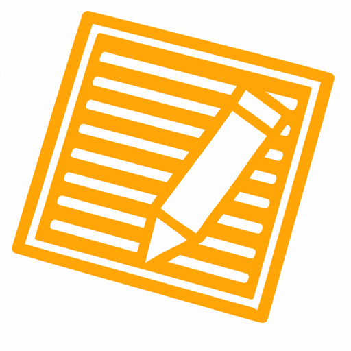

2026-09-29 · UI/UX Lead · DESIGN REVIEW ONLY — 실제 아이콘/Splash 미교체. 공식 브랜드 자산 그대로 사용, 새 로고·심볼·색 없음.
각 안을 iOS 스퀴클 마스크와 Android 원형 마스크로 미리보고, 작은 크기(60·48px)에서의 균형까지 확인합니다.

추천 75%: 회전된 문서의 대각선 모서리가 마스크에서 확실히 떨어져 “여백 있는 브랜드” 느낌을 주면서도, 작은 크기(48px)에서 심볼이 약해 보이지 않는 균형점. 70%는 살짝 비어 보이고, 80%는 대각선 모서리가 여전히 가장자리에 근접.
Android 12+ 적응형 아이콘: 흰 배경 + 심볼 foreground. 75% 축소로 원형/스퀴클 어느 마스크에서도 문서 모서리가 잘리지 않습니다.
+ 위치 비교공식 wordmark 이미지는 Splash에서 제외하고 텍스트 기반으로 구성합니다. 제품명 전체는 단색 near-black(#12161F), +도 같은 색(별도 orange 아님). 심볼의 orange는 그대로 유지됩니다.
+가 제품명 한 글자처럼 읽힘+를 디 우상단에 작게 → 브랜드 마크처럼 인식두 안 모두 아래 Splash 실제 크기에서 렌더링됩니다. superscript는 각주가 아니라 제품명 일부로 자연스럽게 읽히는 선(≈0.5em, 우상단)으로 조정.
warm-white 배경 · orange 심볼 + near-black 레전드스터디⁺(superscript) · 버전·로딩·기능·광고·워드마크 이미지 없음 · 애니메이션 최소.
A · 심볼 + 레전드스터디⁺ (tagline 없음)
B · 심볼 + 이름 + tagline · 추천
Android 12+ 동일 구성. 네이티브 splash는 심볼 중심, 이름·tagline은 Flutter 첫 프레임.
추천 B안 (심볼 + 레전드스터디⁺ + tagline), 이름 표기는 superscript ⁺, 색은 단색 near-black.
Native launch = orange 심볼 중심(흰 배경) → Flutter 첫 브랜드 프레임 = 심볼 + 레전드스터디⁺ + tagline. tagline을 네이티브 런치스크린에 넣지 않고 첫 프레임에서 페이드로 얹어, iOS/Android 12+에서 logo size jump·double splash 없이 이어지도록 구현.
AppIcon.appiconset 15개 + 1024는 tool/export_launcher_icons.py가 소스에서 생성. 스케일 적용 = export 전에 소스를 흰 1024 캔버스에 75%로 합성(재도색·재드로우 없음). LaunchScreen.storyboard는 흰 배경 + 중앙 orange 심볼만(텍스트 없음).ic_launcher_foreground는 이미 24dp 패딩(240/432). 레거시 mipmap-*/ic_launcher.png도 동일 75% 합성으로 통일. Android 12+ splash 테마(values-v31)는 흰 배경 + 심볼만, 세이프존 준수.+는 이름과 동일 near-black. 패키지·버전·딥링크·OAuth 불변.이 페이지는 리뷰용입니다. 실제 적용은 Owner 선택(아이콘 %, + 표기, tagline 유무) 후 별도 승인 작업에서 export 스크립트 스케일 반영 → --write 재생성 → Flutter 첫 프레임 + 네이티브 splash 구성 → 기기 검증 순으로 진행합니다.